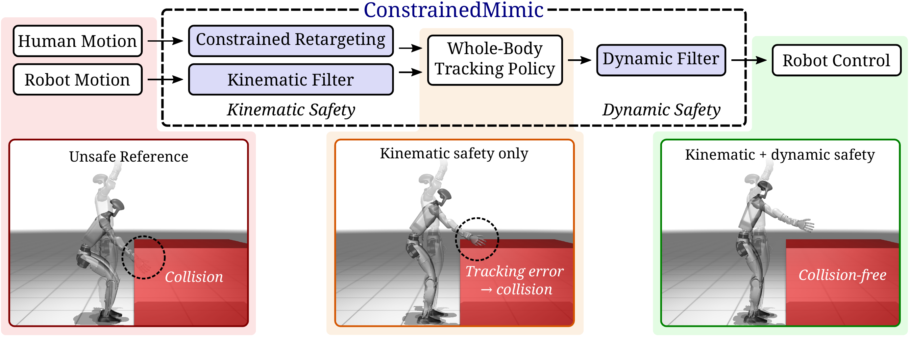
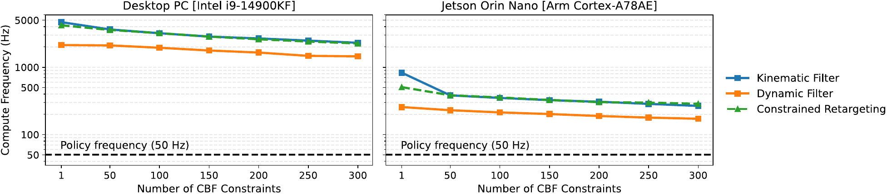

Constrained Whole-Body Tracking for Humanoid Robots
Abstract
Recent advances in reinforcement learning (RL) have demonstrated impressive whole-body agility for humanoid robots, yet ensuring safety and satisfying constraints – particularly those specified after training – remains a challenge. Towards this goal, we present ConstrainedMimic, a control framework that leverages whole-body kinematics and dynamics for real-time constraint enforcement within RL tracking policies. By integrating principles from operational space control and control barrier functions (CBFs), we enable the satisfaction of arbitrary runtime constraints on both the kinematic reference motion and the underlying dynamics. In whole-body motion-tracking and teleoperation experiments on a (simulated) Unitree G1 with a learned policy, we demonstrate collision avoidance (both with the robot body and external obstacles), joint limits, and center of mass stability constraints. By remaining consistent with the current contact mode and tracking objectives, we minimally restrict the capabilities of the policy when constraints are active. Our method is fully differentiable, runs on CPU, GPU, and TPU, and can be deployed at kilohertz control rates.
Safety can be enforced on both sides of a whole-body tracking policy
Modern humanoid stacks pass a kinematic reference (from retargeted MoCap, VR teleoperation, or a planner) to an RL tracking policy, which outputs joint commands. This gives two natural places to enforce safety without touching the policy: the input kinematic reference, and the output dynamics. ConstrainedMimic provides three methods across these layers: constrained retargeting, kinematic filters, and dynamic filters.

Key findings
- 01Purely kinematic notions of safety are insufficient for policies with tracking error
- 02Safety filters for humanoids must account for the contact-constrained kinematics and dynamics
- 03Discrete kinematic modes impact the dynamic feasibility of single-step constraint enforcement
- 04Certain constraints inherently require breaking the current contact mode
- 05ConstrainedMimic is fast and scalable
Purely kinematic notions of safety are insufficient for policies with tracking error
A “karate chop” toward a table, with a hand–table collision constraint that could not have been known at training time. Constrained retargeting produces a safe reference (B), but the policy overshoots it (C). A dynamic filter on the policy output maintains safety (D), and combining kinematic and dynamic safety is collision-free, though more conservative (E).
The same holds for constraints known at training time
Self-collision is typically part of the training reward, yet tracking an “arm-crossing” teleoperation reference with TWIST2 immediately leads to collision between the arms. Even constraints known a priori benefit from explicit safety filtering at deployment time.
Across 100 randomized trials, both layers together are most reliable
We vary the constraint parameters (e.g. table height) and the reference playback speed (0.5×–2.0×). The base policy is unsafe even for constraints known at training time; kinematic safety reduces violation but suffers from overshoot; dynamic safety operates at the lowest level and reduces violation further; and enabling both is the most reliably safe.
On hardware, dynamics model mismatch makes both layers necessary
We recreate the karate chop on a Unitree G1 with TWIST2. In simulation, the dynamic filter alone was the most minimally-conservative safe option; on hardware, unmodeled friction and inertial mismatch lead to small violations when moving fast. Kinematics alone fails due to tracking error, dynamics alone fails due to imperfect modeling — together, they complement each other.
Safety filters for humanoids must account for the contact-constrained kinematics and dynamics
Michael Jackson's antigravity lean is impossible without specialized shoes: the center of mass leaves the support polygon. Building up a contact-constrained kinematic safety filter (CoM stability + joint limit CBFs) shows why each piece is needed: without contact constraints the feet leave the ground (B), a CBF on the unconstrained model is violated once contact is enforced (C), and without a task-consistent objective the filter induces undue motion at the boundary of safety (D).
Discrete kinematic modes impact the dynamic feasibility of single-step constraint enforcement
Walking under a head-height obstacle, collision avoidance can be satisfied by bending backward (“limbo”) or forward (“crouch”). Both are kinematically safe, but only one is dynamically feasible. CBFs are a single-step method; choosing between modes requires longer-horizon reasoning — provided by the human in teleoperation, and a target for future work in full autonomy.
Certain constraints inherently require breaking the current contact mode to maintain safety
A robot standing still cannot avoid an approaching obstacle without taking a step: with feet fixed, collision is inevitable. We use a simple bilevel heuristic: a reduced-order planar CBF produces a safe velocity, a lower-body planner turns this into a kinematic reference, and whole-body safety is enforced on the result, tracked by SONIC.
All methods run well above policy frequency, even on edge devices and with hundreds of constraints
Higher rates mean tighter feedback loops, control over faster dynamics, and room for more constraints in a fixed compute budget. Built on JAX with frax and CBFpy, the dynamic filter can run faster than the policy itself (250 Hz, 5× policy rate, in our experiments).

Compute frequency vs. number of CBF constraints. Left: Intel i9-14900KF. Right: Jetson Orin Nano.
BibTeX
@article{morton2026constrained,
author={Morton, Daniel and Mohnot, Pranit and Pavone, Marco},
title={Constrained Whole-Body Tracking for Humanoid Robots},
journal={arXiv preprint arXiv:2606.00374},
year={2026},
}